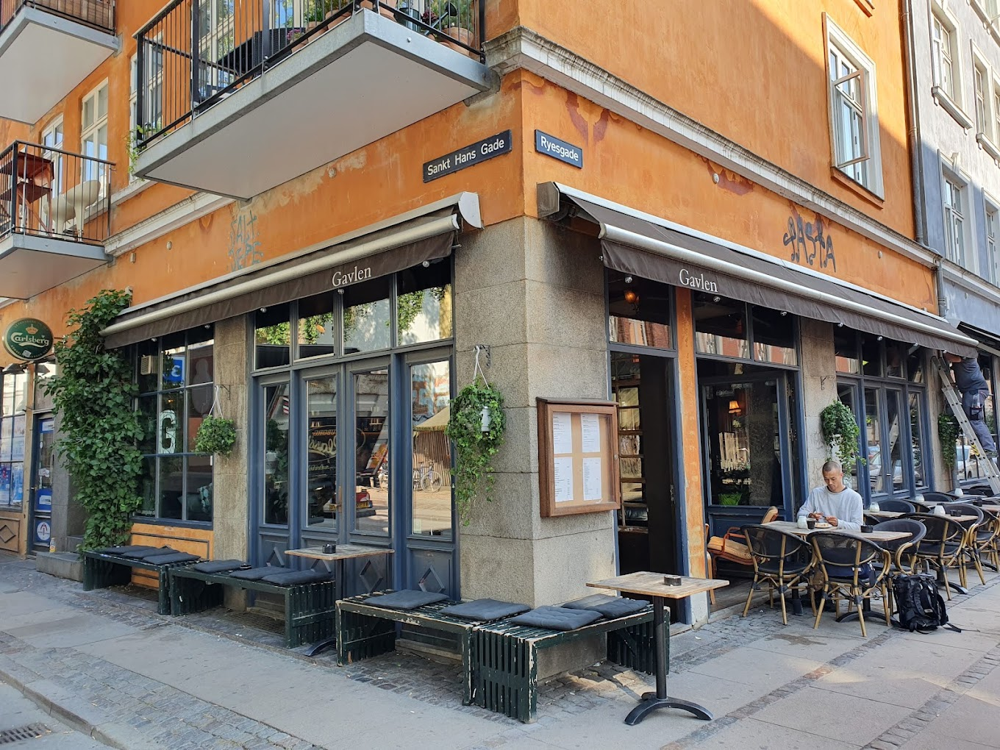

Anbefalinger
Her kommer Næveklubbens første og bedste anbefaling: Café Gavlen

Næveklubbens første anbefaling lyder blot på den hyggelige Café Gavlen, som ligger på hjørnet af Ryesgade. En hyggelig café hvor du både kan få varm kaffe, kolde øl og sidde lige ved siden af toilettet hvis du nu skulle være så uheldig, at få blærebetændelse:(
Café Gavlen - Her kan du se andre klubbers anbefalinger om stedet.